This guide covers both trackers — Sysco (dry goods & chemicals) and Champion (packaging). They work exactly the same; the pictures below are from Champion.
You always count the thing you physically pick up. A sleeve of clamshells, a pack of napkins, a roll of foil, a box of gloves. Never do math in your head — never convert to cases while counting.
The app knows how many sleeves or packs are in a case, and it does the cases math only at the very end, when it writes the order for the supplier.
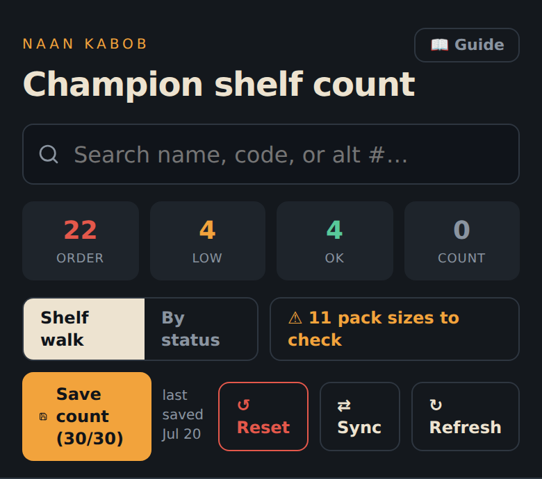
The Count tab is home. From the top:
Search finds any item by name or code. The four boxes show how many items are at each status. Shelf walk lists items in the order they sit in the restaurant; By status puts the urgent ones first.
Walk the shelves and enter what you see: tap the big number and type, or use − and +. That's the whole job.
While you count, a floating "Counted 12 of 43 — Save count" button follows you at the bottom of the screen — you always know how far along you are, and saving is one tap from anywhere in the list.
Tapping it stores a dated snapshot — it's how the app learns how fast you use things, so ordering suggestions keep getting smarter. Save after every full walk. Only items you actually recounted go into the snapshot; the message tells you if any were left out.
Reset clears all numbers for a fresh recount (you get an Undo button for a few seconds). Sync opens the data sheet (see syncing). Refresh reloads the app to pick up updates.
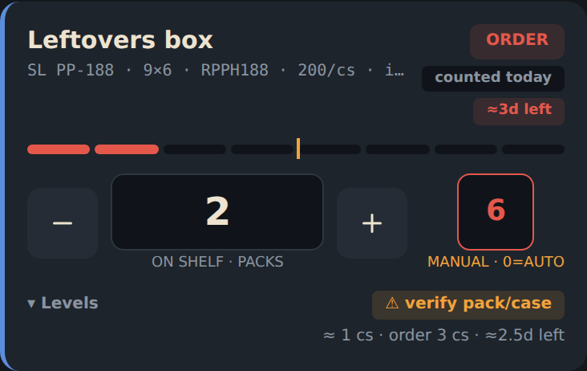
Every card tells the same story:
| What you see | What it means |
|---|---|
| ORDER | At or below the reorder point — it's going on the order. |
| LOW | Getting close. Not ordered yet. |
| OK | Plenty on hand. |
| COUNT | No number yet — count it. |
| BACKUP | Normally bought from the other supplier — this entry is just a spare tire. No warnings, no auto-order. |
| counted today / counted Jul 15 | When this number was last set. |
| ≈3d left | Projected days until it runs out, at your usage speed. |
| The dashed bar | Stock level vs Max. The orange tick is the reorder point — when the fill drops past the tick, it goes on the order. |
| Big box — labeled "on shelf" | What's on the shelf, in the item's counting unit (the label names it: "on shelf · sleeves"). |
| Small box — labeled "to order" | What to order (see next section). The label turns amber — "manual · 0=auto" — when you've typed your own amount. |
The small grey line under the name shows the product code and the pack — "200/cs · in packs" means a case holds 200 pieces and you count it in packs.
The small box on the right is what will be ordered. The app
fills it in automatically when the item actually needs ordering — for items
that are still fine, it stays empty. The word under it (PACK,
SLEEVE, ROLL…) tells you which unit it speaks.
To order a different amount, just type over it — your number wins, and the label under the box turns amber ("manual · 0=auto") so you can see the override is on. Typing 0 puts it back on automatic. Re-counting the item also puts it back on automatic.
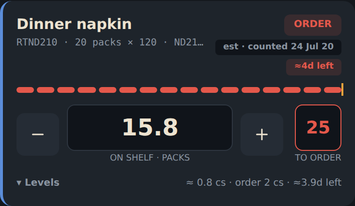
If you don't count an item for a few days, the app doesn't pretend nothing happened — it subtracts your normal daily usage and shows its best estimate. The grey chip says est · counted 24 Jul 14: "you counted 24 on July 14; my estimate for right now is what's in the big box."
An estimate is a guess, not a count. The moment you type a real number, the card snaps back to reality. Weekly full counts keep everything honest.
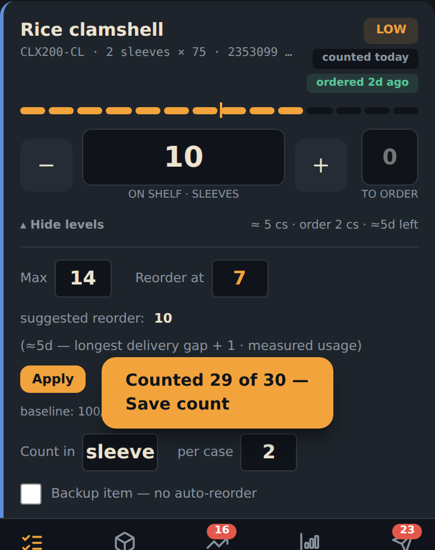
Tap ▾ Levels on any card to open its settings:
Max — the most that fits on your rack. Orders never exceed it. Reorder at — the level that triggers ordering.
Suggested reorder — the app's recommendation, based on your real usage and the delivery schedule (enough to survive the longest gap between trucks, plus a day). Tap Apply to accept it.
Count in / per case — the counting unit and how many go in a case. Only change these after checking a real box.
Backup item — tick this for items you normally buy from the other supplier. The app stops nagging about them.
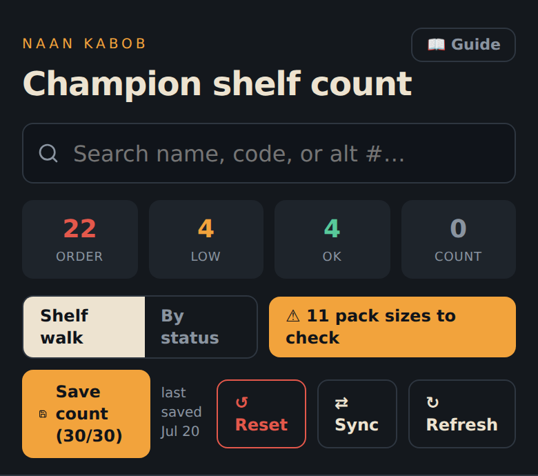
Some pack sizes were set up as best guesses and wear a small ⚠ verify chip. The ⚠ N pack sizes to check button next to the Shelf walk switch shows only those items. Next time a case of one of them comes in, look at the box, fix per case under Levels if needed, and the ⚠ disappears. The button goes away when everything is confirmed.
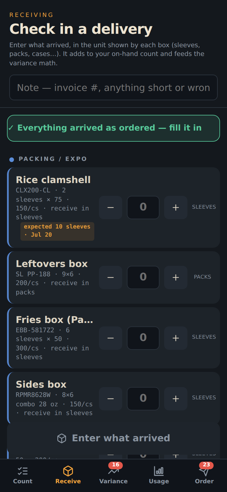
Go to Receive and enter what actually came off the truck, item by item, in the same counting units as always. If you logged the order in the app, a small expected chip reminds you what should arrive — and a big "✓ Everything arrived as ordered — fill it in" button fills every expected row in one tap. Fix the one thing they shorted, then log.
Receiving something you'd never counted before? No problem — the app treats the blank as zero and sets the count for you.
Type a short note ("Champion Jul 10 · stone shorted") and tap Log delivery. The app adds everything to your shelf numbers and keeps a receipt. If you make a mistake, there's an Undo right after.
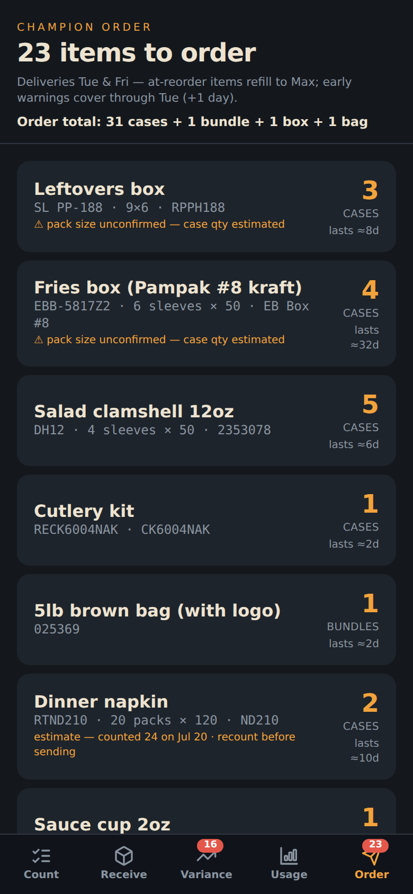
The Order tab collects everything that needs ordering — items at their reorder point, plus early warnings for anything that won't last until the next truck. The header shows the whole order summed up ("Order total: 30 cases + 1 bundle…"), and each row shows how long that order should last. If a row is based on an old estimate instead of a fresh count, it warns you in amber: "recount before sending" — a ten-second recount beats ordering off a guess.
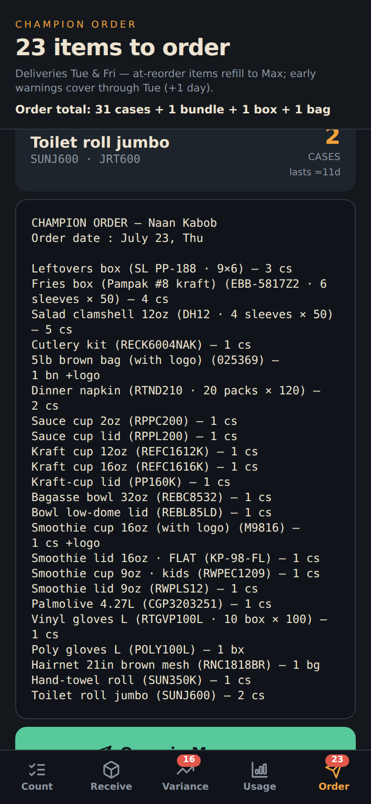
Below the list is the ready-to-send text — always in supplier units (cases, bundles, bags), starting with the order date (tomorrow, since you text tonight and the rep enters it in the morning).
Tap Send order (or Open in Messages), send it to your rep, then tap Mark as ordered. That last tap matters: it starts the "ordered 2d ago" reminders and pre-fills the Receive tab for when the truck shows up.
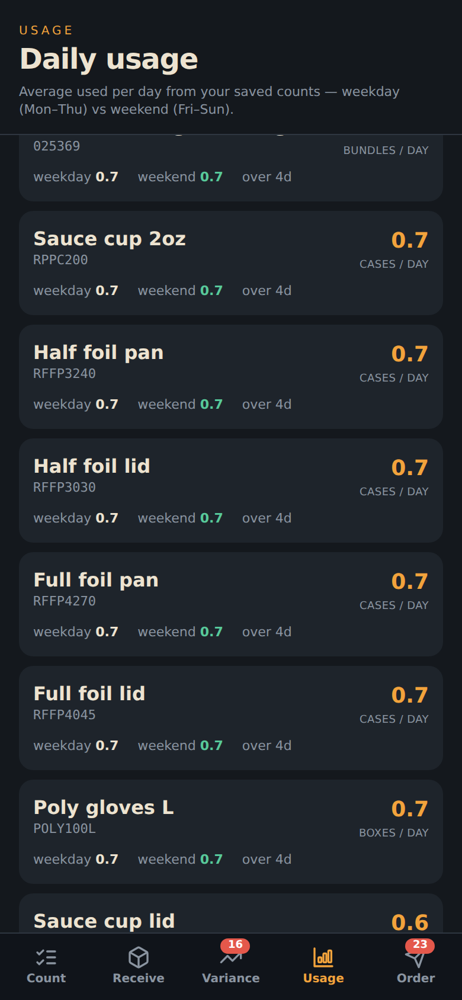
Usage shows how much of each item you go through per day — weekdays vs weekends — measured from your saved counts. Units are spelled out ("packs / day", "rolls / day"). This is the engine behind every suggestion in the app, and it sharpens every time you save a count.
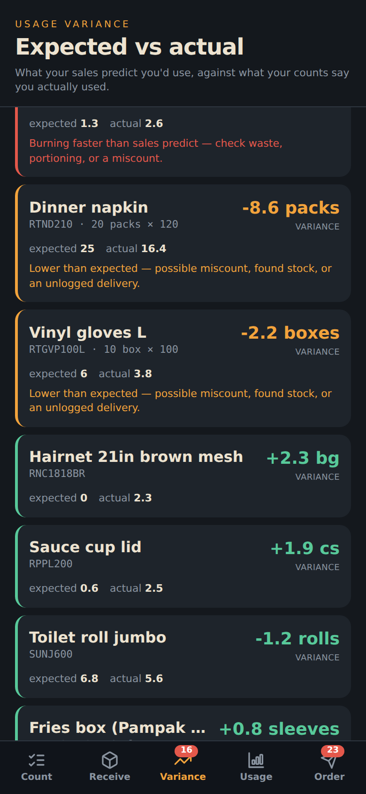
Variance compares your last two counts: how much should have been used vs how much actually disappeared. Big red differences are worth a look — miscounts, waste, or an unlogged delivery.
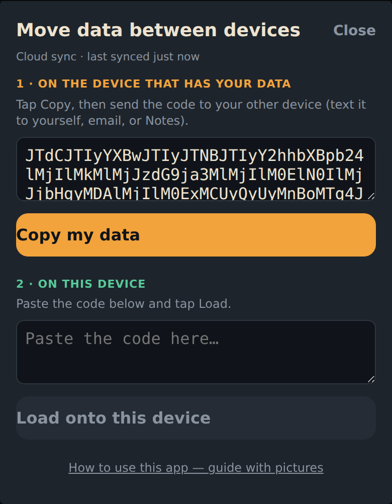
Your numbers save on the phone instantly and sync to the cloud automatically — the sheet under ⇄ Sync shows when the cloud was last reached. If you're offline, everything keeps working and syncs when you're back.
The copy/paste codes are a manual backup: copy on one device, paste on another. Never paste a Sysco code into Champion (or the other way around).
The order box speaks packs/sleeves, the order speaks cases. Type cases you want × packs per case. See the order box.
Check its badge — if it says BACKUP, it belongs to the other supplier's app. You can still order it by typing a number in its order box by hand.
Just type what's really on the shelf. A fresh count always wins — no harm done.
"Not synced" means the phone can't reach the cloud right now. Your numbers are safe on the phone and will sync when internet returns.
Save after every full shelf walk. Skipping saves doesn't lose numbers, but saved counts are what teach the app your usage speed.